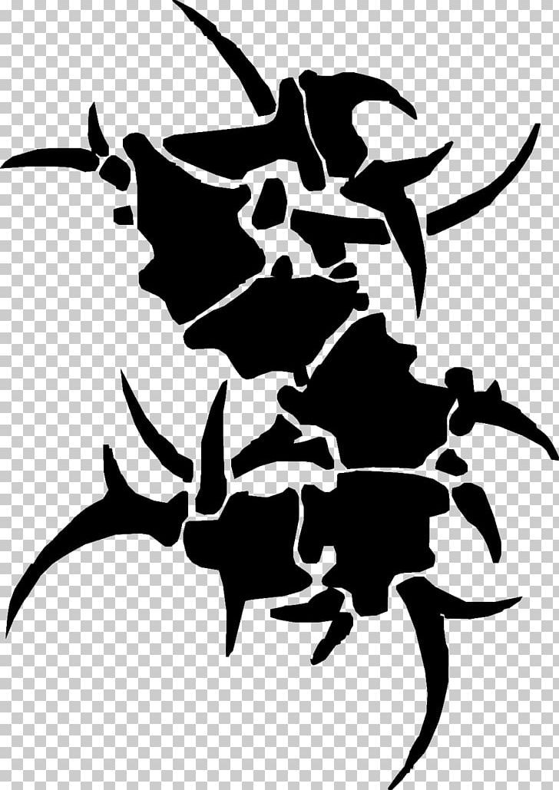
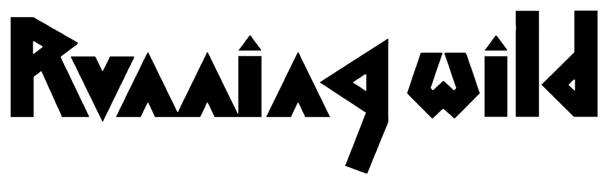
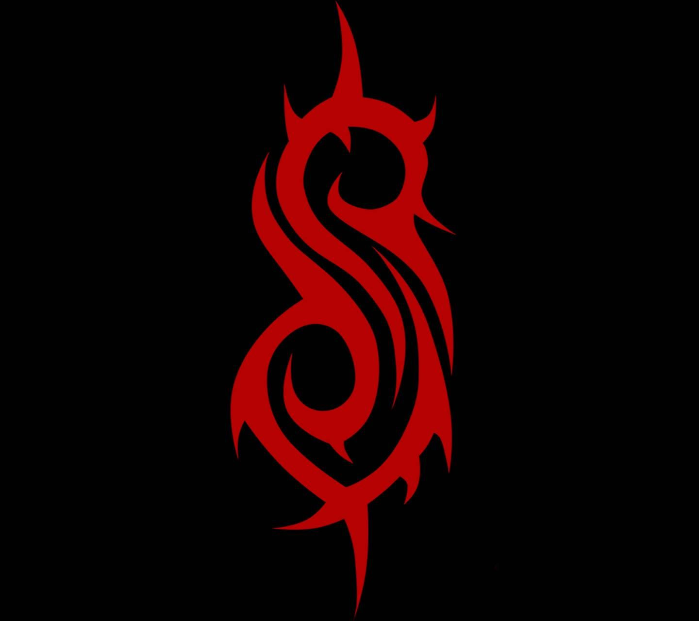
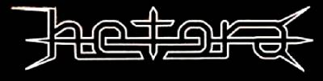

VRSTE METAL MUZIKE
Heavy Metal
Hevi metal u užem smislu nastao je krajem 70-tih i početkom 80-tih godina prošlog veka u Engleskoj pod nazivom "novi talas britanskog hevi metala".
Karakterišu ga melodične gitarski zvuk i vrišteći vokali.
Bendovi:
IRON MAIDEN

Power Metal
Za nijansu brži i melodičniji od hevi metala sa malo težim zvukom ritam gitara.
Bendovi:
BLIND GUARDIAN, HAMMERFALL

Progressive Metal
Progressive Metal
Neparni ritmovi, složeni rifovi i virtuozne solo deonice.
Bendovi:
DREAM THEATER

Thrash Metal
Treš metal je nastao početkom 80-tih. Muzika je sirova, manje se oslanja na melodiju, a više na žestinu. Česte su socijalne i buntovničke teme.
Bendovi:
METALLICA, MEGADETH, SLAYER, ANTHRAX, SEPULTURA, SODOM, KREATOR, PANTERA





Speed Metal
Spid metal je brži od hevi metala, ali zadržava njegovu melodičnost.
Bendovi:
HALLOWEEN, RUNNING WILD, GRAVE DIGGER


Black Metal
Brz, težak i melodičan zvuk. Posebno je popularan u skandinavskim zemljama. Stihovi pesama ponekad imaju antihrišćanske poruke.
Bendovi:
DIMMU BORGIR, IMPALED NAZARENE, CRADLE OF FILTH


Death Metal
Ekstremno brutalan zvuk i muzička virtuoznost. Brutalni vokali, tekstovi uglavnom nerazumljivi.
Bendovi:
DEATH, MORBID ANGEL, SLIPKNOT

Doom Metal
Bendovi:
AMORPHIS, MY DYING BRIDE, ANATHEMA


Gothic Metal
Nastao je simbiozom gotik kulture i metala. Spor, dubok i melodičan zvuk. Česti su visoki ženski vokali.
Bendovi:
THEATER OF TRAGEDY, WITHIN TEMTATION

Symphonic Metal
Sličan gotik metalu, samo melodičniji i pevljiviji.
Bendovi:
NIGHTWISH, HAGGARD, IMPERIA, LEAVES' EYES


New Metal
Nastao pod uticajem hard-kora i hip-hopa na metal. Težak gitarski zvuk, isprekidani ritmovi, vokali su znatno razumljiviji.
Bendovi:
KORN, LINKIN PARK, RAGE AGAINST THE MACHINE


Post Metal
Bendovi:
TOOL, A PERFECT CIRCLE

Grindcor
Nastao fuzijom panka i treš-det metala. Ekstremno brz, težak i brutalan zvuk i brutalni, nerazumljivi vokali.
Bendovi:
NAPALM DEATH, DYING FETUS

Industrial Metal
Nastao fuzijom metala i industrijske muzike.
Bendovi:
MINISTRY, RAMMSTEIN, KMFDM
Metalcore
Nastao fuzijom hard-kor panka i ekstremnog metala.
Bendovi:
KILLSWITCH ENGAGE, DARKEST HOUR, HETERA
